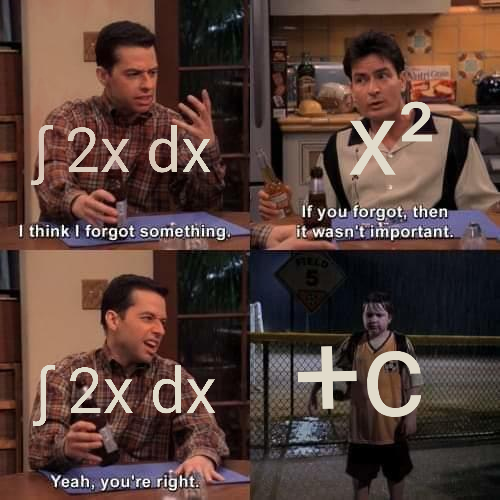

More Notation for Integrals¶
We will use part 2 of fundamental theorem of calculus a lot, so I introduce some notation to help with it.
New notation for $F(b)-F(a)$¶
Calculating an integral might look like this: $$ \begin{align} \int_1^2 (x^2+1)\ dx %&= \left[ \frac{1}{3} x^3+x \right]_1^2 \\ &= \frac{1}{3} 2^3+2 - \left(\frac{1}{3} 1^3+1\right) \\ &= \frac{10}{3} \end{align} $$ Here I have chosen $F(x)=\frac{1}{3}x^3 + x$ and calculated $F(2)-F(1)$. It works because $x^2+1$ is continuous on $[1,2]$ and $$ \frac{d}{dx} \left( \frac{1}{3}x^3 + x \right) = x^2 + 1. $$ However, if I forget to mention $F(x)=\frac{1}{3}x^3+x$, it can be hard to guess just by looking at the calculation. To fix this problem, we use $[F(x)]_a^b$ to denote $F(b)-F(a)$. With that, the calculation looks like this: $$ \begin{align} \int_1^2 (x^2+1)\ dx &= \left[ \frac{1}{3} x^3+x \right]_1^2 \\ &= \frac{1}{3} 2^3+2 - \left(\frac{1}{3} 1^3+1\right) \\ &= \frac{10}{3} \end{align} $$ Now it's easy to see which function $1$ and $2$ get plugged into, and that makes it much easier to check that the calculation is correct; just calculate the derivative of what's between $[$ and $]$, and make sure you get $x^2+1$.
There are many other notations for $F(b)-F(a)$. Here are some of the ways to write it I have seen. Pick your favorite notation and use it, or use whatever your teacher or lecturer uses. $$ \begin{align} F(b)-F(a) = [F(x)]_a^b = F(x)\Big|_a^b = \Bigg|_a^b F(x) = \mathop{\Big/}_{a~~~}^{~~~b} F(x) \end{align} $$
Notation for antiderivatives¶
To denote "a function whose derivative is $f$", we do $$ \int f(x)\ dx. $$ Note that this differs from $\int_a^b$ by lacking $a$ and $b$. When you see the integral sign, make sure to check whether it's $\int_a^b$ or just $\int$; that completely changes the meaning.
Because of this notation, many people say "integral of $f$" when they mean a function whose derivative is $f$. Usually I write "antiderivative of $f$" instead, just to be clear.
For example, because $\frac{d}{dx} x^2 = 2x$, we can write $$ \int 2x\ dx = x^2. $$ However, because $\frac{d}{dx}(x^2+5) = 2x$, we could just as well write $$ \int 2x\ dx = x^2+5. $$ In general, $$ \frac{d}{dx}(x^2+\text{constant})=x^2+5 $$ for any constant. There are no other antiderivatives than the ones you get by adding constants to $x^2$; we saw it in this derivation. That's why we write $$ \int 2x\ dx = x^2 + C, $$ where $C$ denotes an arbitrary constant. In the above equation, $\int f(x)\ dx$ actually means "all antiderivatives of $f$", and from now on, that's what $\int f(x)\ dx$ means. Generally, if $F$ is one antiderivative of $f$, then $$ \int f(x)\ dx = F(x) + C. $$

The image is from here.